← Índice de los 69 tutes de IDA
Tute 21 · ¿Vulnerable o no?
se conecta con: IDA · Llamadas y pila · Flujo · Vulnerabilidades (defensivo)
INTRODUCCIÓN AL REVERSING CON IDA PRO DESDE CERO PARTE 21
¿VULNERABLE O NO?
En la parte 20 dejamos un ejercicio para analizar si era vulnerable o no y en la lista de crackslatinos hubo muchas opiniones, yo no conteste y deje que discutan el tema dejando la solución del ejercicio y el análisis para ser contestados en esta parte 21.
Teníamos el código fuente que nos podía ayudar, el idb y el ejecutable para poder reversear en IDA y debuggear si es necesario.
El código fuente es este.
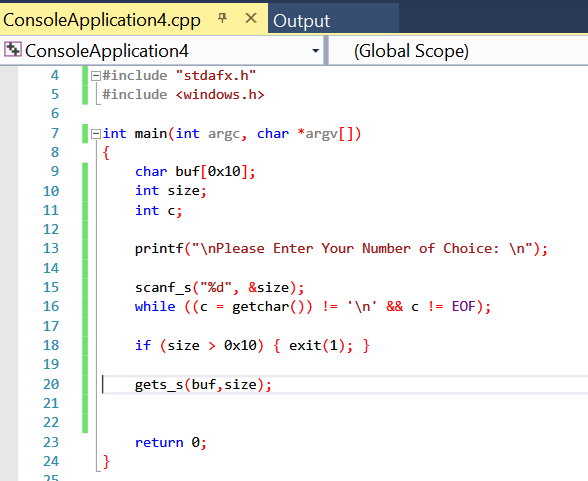
Igual analizaremos estáticamente en IDA primero.
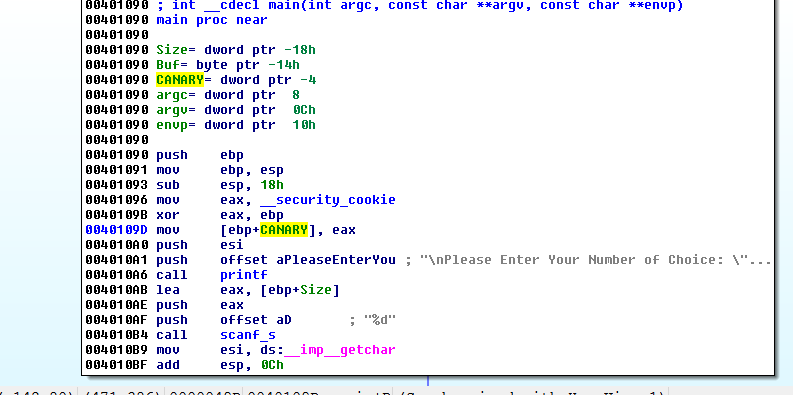
Allí tenemos el CANARY que lo renombramos como siempre.
Tenemos Buf, veremos el largo del mismo en la representación estática del stack.
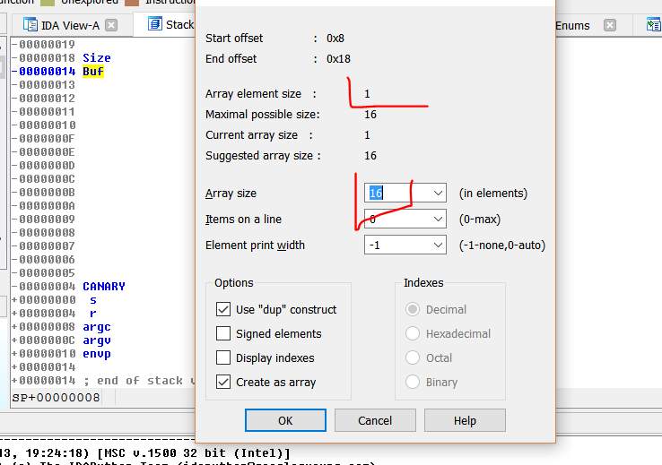
El largo es 16 por 1 que es el largo de cada elemento o sea 16 bytes decimal.
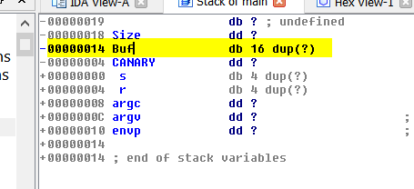
O sea que si pudiéramos escribir más de 16 bytes en el BUFFER sería vulnerable.
NO confundir bugs comunes o crashes con vulnerabilidades, no todo lo que hace crashear a un programa es una vulnerabilidad si hago.
XOR ECX, ECX
DIV ECX
Es un bug que pondrá a cero ECX y al dividir por cero y provocará una excepción que si no es manejada será un crash.
BUFFER OVERFLOW.
Eso es un simple crash, existen varios tipos de vulnerabilidades por ahora solo estamos viendo la más sencilla el BUFFER OVERFLOW.
Si existe un desbordamiento de un BUFFER pudiendo escribir fuera de donde termina el espacio reservado para el mismo el programa será VULNERABLE pues podría producirse un BUFFER OVERFLOW, más adelante veremos si además de ser VULNERABLE es EXPLOTABLE o no, puede ser VULNERABLE y por ejemplo NO EXPLOTABLE por alguna mitigación del programa o del sistema como el CANARY por ejemplo que impidiera su explotación, pero eso es un tema para partes siguientes.
Así que la idea es analizar si ese BUFFER de 16 bytes decimal se puede desbordar, como en este caso, justo debajo del Buf está el CANARY, si llegáramos a pisar el mismo al copiar en el buffer, es obvio que existiría un BUFFER OVERFLOW.
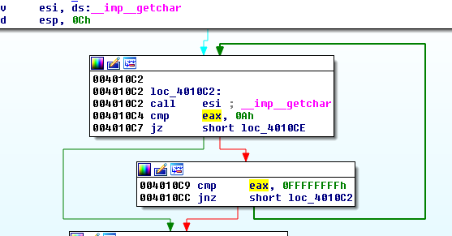
Ese código corresponde a esta línea del código fuente.
while ((c = getchar()) != '\n' && c != EOF);
Es una línea que se usa luego del scan para que lea el 0xA del estándar input que es el salto de línea, así no molesta en una sucesiva lectura del mismo, pues si queda y no se filtra, en la siguiente llamada a leer caracteres del teclado, no funcionará.
Vemos que loopea hasta que encuentra el 0xA que corresponde al SALTO DE LÍNEA o LF.
Caracteres de control ASCII no imprimibles :
codigo ascii 00 = NULL ( Carácter nulo )
codigo ascii 01 = SOH ( Inicio de encabezado )
codigo ascii 02 = STX ( Inicio de texto )
codigo ascii 03 = ETX ( Fin de texto, palo corazon barajas inglesas de poker )
codigo ascii 04 = EOT ( Fin de transmisión, palo diamantes barajas de poker )
codigo ascii 05 = ENQ ( Consulta, palo treboles barajas inglesas de poker )
codigo ascii 06 = ACK ( Reconocimiento, palo picas cartas de poker )
codigo ascii 07 = BEL ( Timbre )
codigo ascii 08 = BS ( Retroceso )
codigo ascii 09 = HT ( Tabulador horizontal )
codigo ascii 10 = LF ( Nueva línea - salto de línea )
codigo ascii 11 = VT ( Tabulador vertical )
codigo ascii 12 = FF ( Nueva página - salto de página )
codigo ascii 13 = CR ( ENTER - retorno de carro )
Creo que eso ocurre si no me equivoco porque en WINDOWS al apretar ENTER que es el 13 decimal o 0x0d, cortas la entrada de caracteres, pero queda siempre ese 0xa en el standard input que molesta en la entrada siguiente por teclado, ya que el salto de línea también cancela el ingreso.
Aquí vemos un script de python que sería funcional para probar este ejercicio.
from subprocess import *
import time
p = Popen([r'VULNERABLE_o_NO.exe','f'],stdout=PIPE,stdin=PIPE, stderr=STDOUT)
print "ATACHEA EL DEBUGGER Y APRETA ENTER\n"
raw_input()
primera="10\n"
p.stdin.write(primera)
time.sleep(0.5)
segunda="AAAA\n"
p.stdin.write(segunda)
testresult = p.communicate()[0]
time.sleep(0.5)
print(testresult)
print primera
print segunda
Vemos que es un script que utiliza subprocess para arrancar el proceso.
p = Popen([r'VULNERABLE_o_NO.exe','f'],stdout=PIPE,stdin=PIPE, stderr=STDOUT)
r
Redirecciona el standard input y output para que podamos mandarle caracteres como si hubiéramos tipeado.
primera="10\n"
p.stdin.write(primera)
time.sleep(0.5)
segunda="AAAA\n"
p.stdin.write(segunda)
Vemos que hay dos ingresos primero el size que me pide, le pongo 10 para probar y luego la data que ingresara con el gets_s con el size que le pasamos antes, puedo tipear menos que 10.
Además le agregue un raw_input() para que una vez que arranque el proceso se detenga el script de python hasta que apreto ENTER, lo cual me permite atachear el IDA al proceso que arrancará y quedará esperando entrada por stdin.
Probemos si funciona el script como pensamos.
Lo arrancamos.
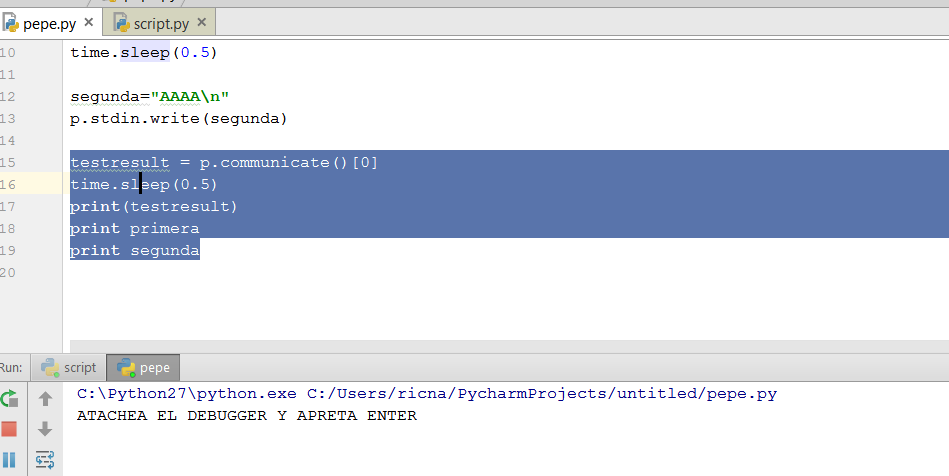
Queda ahí detenido esperando que apretemos ENTER dándonos la posibilidad de atachear el IDA.
En el mismo abro el VULNERABLE_o_NO.exe para que lo analice en el LOADER sin arrancarlo en el DEBUGGER y luego elijo LOCAL WIN32 DEBUGGER y voy a DEBUGGER-ATTACH TO PROCESS.
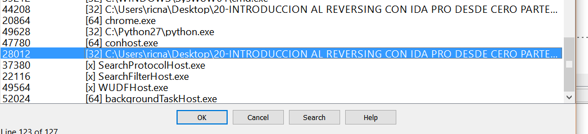
Allí no se llega a ver el nombre del ejecutable porque el nombre de la carpeta es muy largo, pero es ese, apreto OK y cuando se detiene apreto f9 para que quede RUNNING.
Luego antes de apretar ENTER en Python, pondré un BREAKPOINT a continuación de la primera entrada por teclado ya que estaba esperando allí el proceso, y solo podré detenerme después de cuando vuelva de esa entrada.
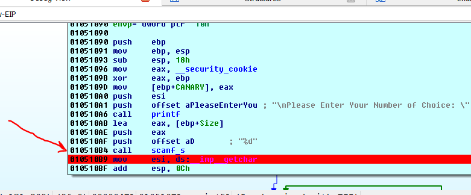
Allí pongo el BREAKPOINT y luego en Python apreto ENTER.
Vemos que para en el breakpoint.
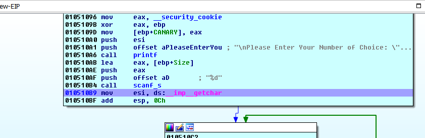
Si paso el mouse por encima de la variable size que es la que ingresamos el valor en el scanf_s.
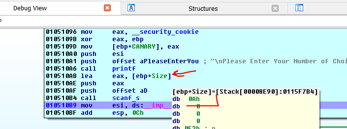
.
Allí vemos que en la variable Size ingreso el valor 10 decimal (0xA) que ingrese mediante el script.
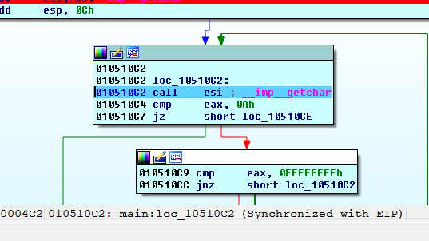
Si llego al getchar la realidad es que yo no pase ningún carácter 0xA en el script.
primera="10\n"
p.stdin.write(primera)
time.sleep(0.5)
segunda="AAAA\n"
p.stdin.write(segunda)
ya que el “ \n” es el ENTER 0x0d
pero si paso el getchar con f8 para saltear el CALL y no ingresar en el mismo.
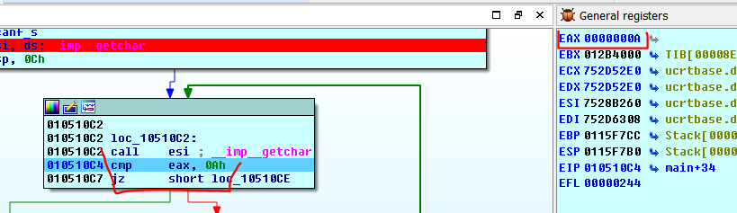
Vemos que quedo un carácter 0xA que yo no pase, el cual al leerlo lo quito del stdin y me limpia para la siguiente entrada por teclado.
Vemos que compara mi size 0xA con el máximo 0x10 y como es menor continua.
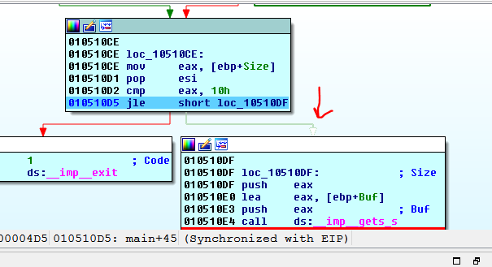
Cuando paso con f8 el gets_s
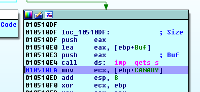
Si pongo el mouse encima de Buf.
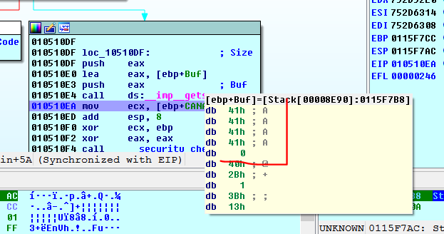
Veo que ingresaron las siguientes A que pase en el script, así que el mismo funciona y me permite probar y debuggear lo que va pasando.
Si lo vuelvo a tirar desde el script y cuando llego al getchar lo salteo cambiando el EIP para que no lea el 0xA.
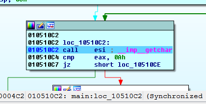
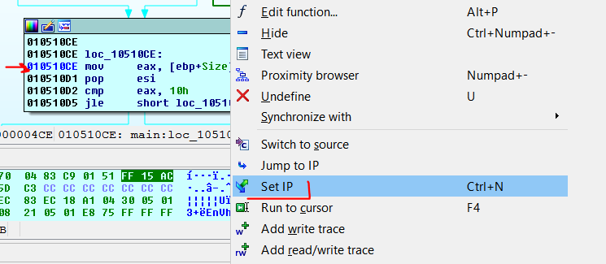
Cambiamos EIP allí para que no filtre el 0xa a ver qué pasa.
Cuando paso el gets_s veo que ahora no ingreso nada.
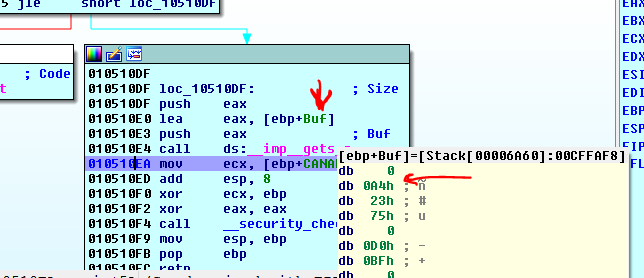
Eso quiere decir que se debe filtrar el carácter 0xA que queda en el stdin luego de ciertas entradas para que no afecte si hay entradas subsiguientes, por eso se justifica la línea de código.
while ((c = getchar()) != '\n' && c != EOF);
También ahora que tenemos el script podemos analizar el crash que se produce en gets_s cuando uno tipea el máximo size a ver si pasa algo mas o es solo un crash.
primera="16\n"
p.stdin.write(primera)
time.sleep(0.5)
segunda="A" *16 + "\n"
p.stdin.write(segunda)
Veré que pasa en este caso.
Con esos datos llego ahí.
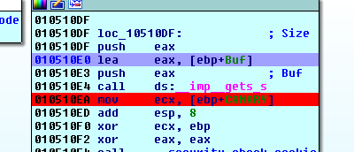
Al pasar el LEA anoto la dirección donde comienza el buffer en mi caso 0x0115FDD8.
Si hago doble click en CANARY y apreto D varias veces hasta que sea un dword (dd), también puedo anotar la dirección en mi caso 0x115fde8 y el valor de CANARY en este caso será 965fa1f4.
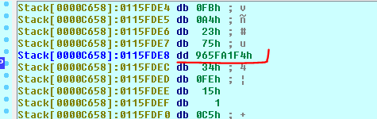
Doy F9.
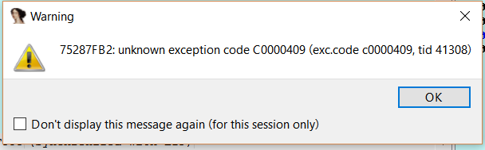
Allí está la excepción que produce la api en algunos Windows, acepto el OK.
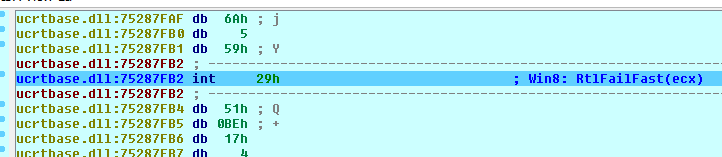
Ahí está vayamos con G y coloquemos la dirección del buffer y luego la del canary a ver que paso.
Vemos que el canary está intacto.
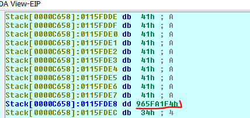
Y el buffer se llenó, así que tipear el máximo no produce overflow, lo que sí es cierto es que el buffer se llenó completo y no quedar el cero final de la string, lo cual podría traer problemas si el programa continúa, pero en este caso la excepción no es manejada y el programa se cierra así que por acá solo es un crash.(también creo que pone un cero al inicio del buffer para anular la string)
Si el programa manejara la excepción y continuará, debería descartar los datos del buffer porque si lo tomara y usará como string, al no tener cero final, se podrían apendear datos que están a continuación en el stack y provocar problemas, pero al poner el cero al inicio la anula igualmente.
Bueno ya sabiendo que por aquí no hay overflow volvamos al análisis estático.
Centrémonos en esta parte.
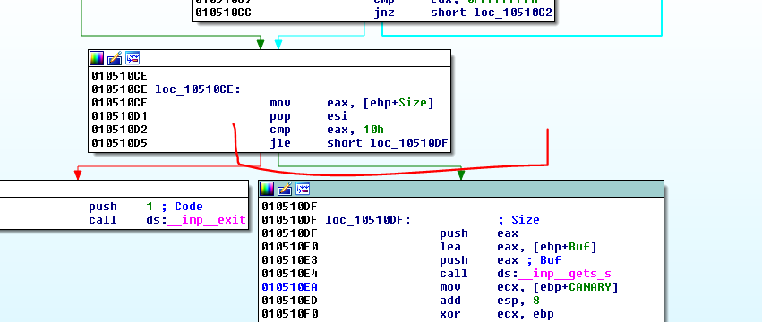
Habíamos dicho que el salto JL o JLE considera el signo o sea que EAX podría ser negativo, si por ejemplo fuera 0xFFFFFFFF seria -1 y sería menor que 0x10.
Quiere decir que si pasara como size -1 tendría posibilidad de que pase la comparación veamos.
primera="-1\n"
p.stdin.write(primera)
time.sleep(0.5)
segunda="A" *0x2000 + "\n"
p.stdin.write(segunda)
Probemos el script con estos valores (size -1)
Al parar en el breakpoint.
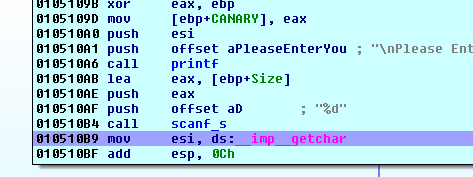
Veamos el valor del size.
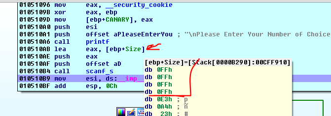
Vemos que vale 0xFFFFFFFF si hago doble click en size y apreto D para agrupar hasta que sea un dword.
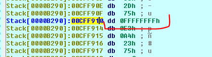
Sigamos traceando hasta la comparación.
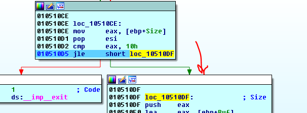
Vemos que como 0xFFFFFFFF es -1 al considerar el signo no filtra y seguirá a leer ese size.
La realidad que en el gets_s lo mismo que un memcpy y cualquier api que copie o ingrese bytes los sizes son interpretados como unsigned, porque no existen los tamaños negativos, como no se pueden ingresar o copiar -1 bytes, eso es imposible, lo interpreta como 0xFFFFFFFF positivo lo cual vemos que producirá un overflow.
Vuelvo a ver dónde está el buffer, esta vez está en 0x00CFF914.
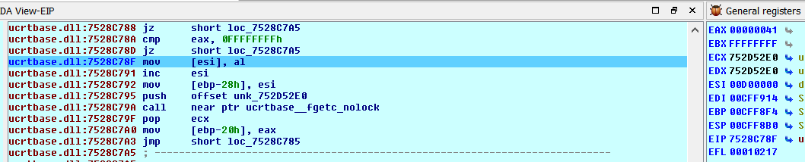
Si voy a donde comienza el buffer.
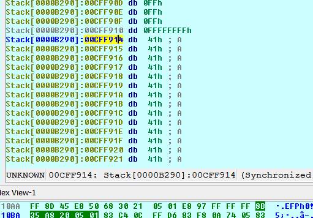
Podemos ver mejor cuanto copio si lo transformo en string, en el inicio de la string apretó A.
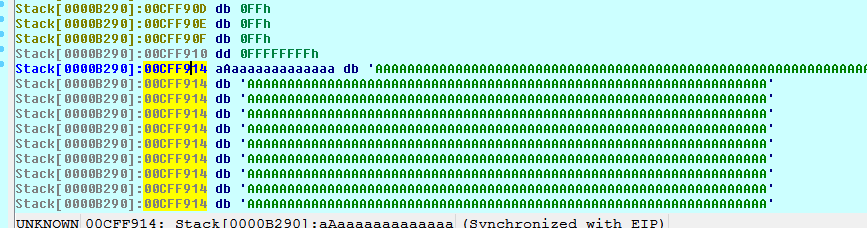
Veo que la cosa es grande jeje.
Y si lo transformo en ARRAY
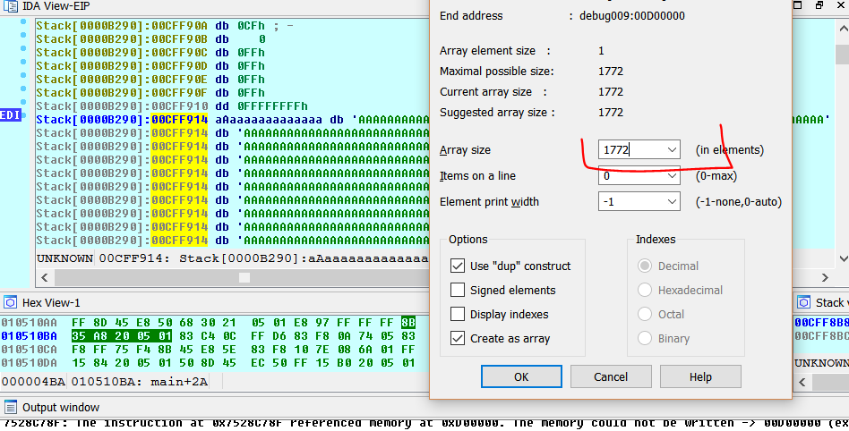
Veo también que llega hasta el final del stack, piso el CANARY piso todo.
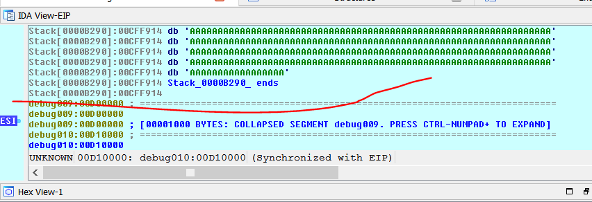
Lo lleno de Aes hasta el final del stack, justo abajo veo que ya cambia a otra sección a debug009.
Con lo cual verificamos que es vulnerable ahora como se podría arreglar, obviamente si en vez de usar un salto JL o JLE que considera el signo usáramos JB o JBE que no lo considera si pasamos -1 será 0xFFFFFFFF pero en la comparación lo tomara como positivo y será más grande que 0x10 y saldrá afuera.
En el código fuente sería así.
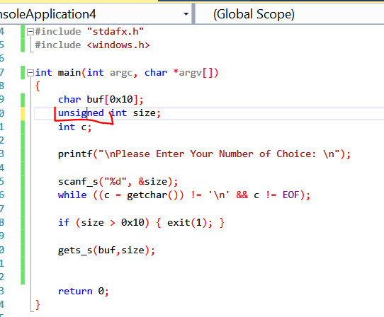
Una sola palabrita lo transforma de VULNERABLE a NO VULNERABLE jeje, compilamos.
NO_VULNERABLE.exe se llama el reparado.
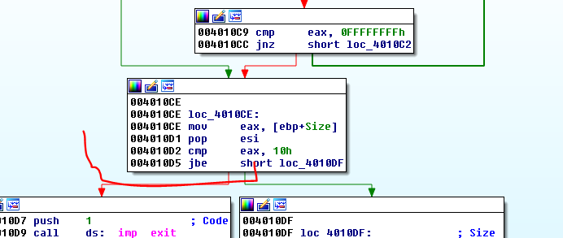
Vemos que con solo cambiar el tipo de variable a UNSIGNED cambio al compilar el tipo de salto al que no considera el signo.
Arreglo el script cambiando el nombre para que cargue este nuevo ejecutable el resto lo dejo igual.
Analizo el nuevo ejecutable en IDA en el LOADER y luego arrancó el script y antes de apretar ENTER, atacheo el LOCAL DEBUGGER y pongo un BREAKPOINT en la comparación del size para que pare allí a ver que pasa.
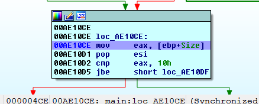
Si veo en size el valor sigue siendo 0xFFFFFFFF.
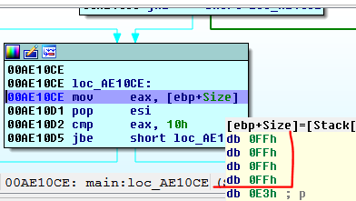
Pero si sigo traceando.
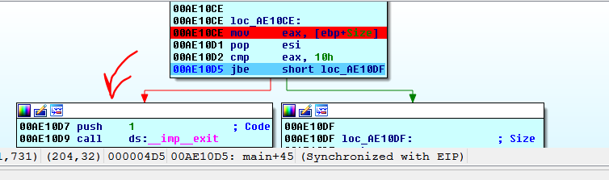
Ahora va a EXIT y evita el overflow ya que JBE considera ese 0xFFFFFFFF como no le importa el signo, como un número positivo grande y mayor que 0x10, con lo cual está reparado el programa.
Por lo tanto la respuesta al ejercicio es que era VULNERABLE y que se repara cambiando el size de INT que es SIGNED a UNSIGNED INTEGER con lo cual cambia el salto JLE por JBE de un salto que considera el signo a uno que no lo hace.
Hasta la parte 22
Ricardo Narvaja